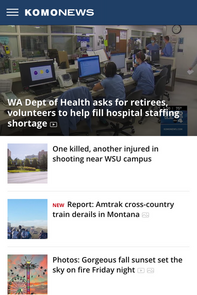
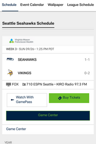

White Space and Clean Design
Spacelabs Healthcare
Spacelabs SiteI feel that this site does a good job with White Space. As was described in one of our readings this week, on this page there is "breathing room." Nothing is squished together which makes it easier to find what you're looking for on the site.
Alignment
Komo 4 News, Seattle, WA
Komo News Site I believe this site is a good example of horizontal alignment. The article descriptions and pictures are lined up very well which does a good job of leading your eye from one article to the next. The max-width is also used well for larger screens.
Contrast
Seattle Seahawks
Seahawks Schedule Site The principle of contrast is illustrated very well by the use of color on this site. In particular the use of the neon green color for the "Buy Tickets" button. Obviously, they want consumers to make a purchase and the neon green instantly grabs your attention when you first get on the site.